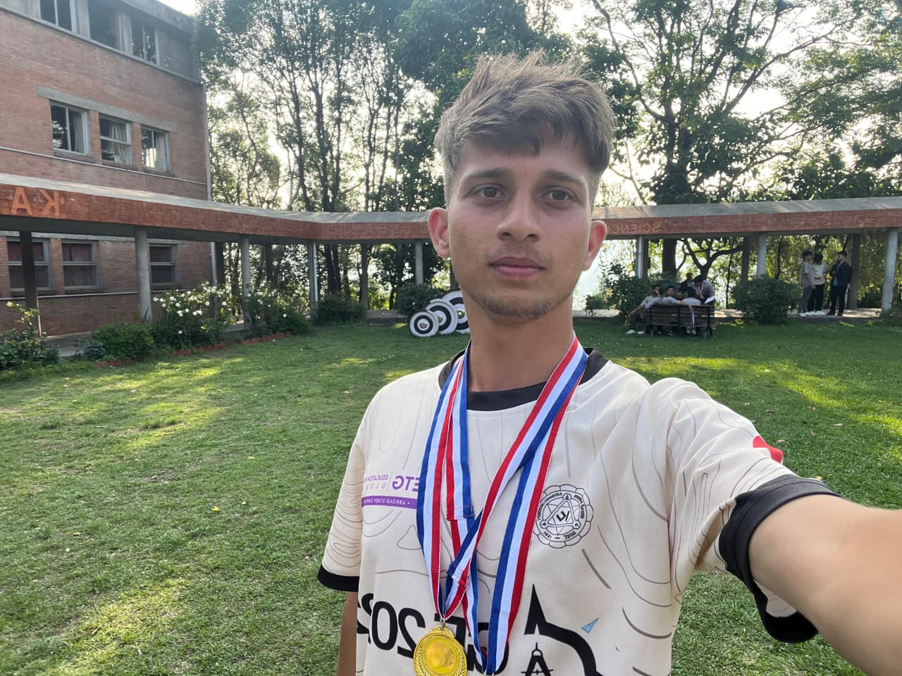

Replace withprofile-photo.jpg
Sugam K. Dhungana
I am a 7th-semester Geomatics Engineering student at Kathmandu University, Dhulikhel, originally from Solukhumbu District — the legendary home of Sherpas and Mount Everest in eastern Nepal. Growing up surrounded by the world’s highest peaks naturally drew me toward understanding how geography and terrain shape human life, agriculture, and development.
My academic journey began at Sainik Awasiya Mahavidyalaya, Sallaghari, Bhaktapur, where I completed both SEE and +2 Science (PCM). The structured, disciplined environment of Sainik Awasiya built strong foundations in mathematics, science, leadership, and teamwork that continue to shape how I approach every project.
In 2022, I joined Kathmandu University to pursue Geomatics Engineering — a discipline that combines geodesy, remote sensing, GIS, photogrammetry, and web mapping. At KU I have worked on land suitability modelling using GIS and AHP, thematic cartography, GPS surveys, DEM-based terrain analysis, and this interactive WebGIS dashboard.
Beyond the lab and lecture hall, I enjoy table tennis, cricket, trekking, writing articles, cycling, chess, swimming, and any form of outdoor adventure that takes me closer to Nepal’s incredible landscapes.